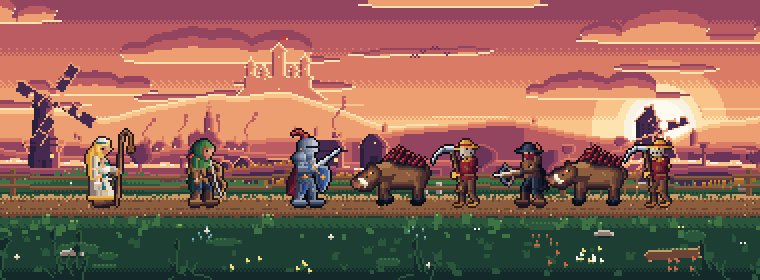
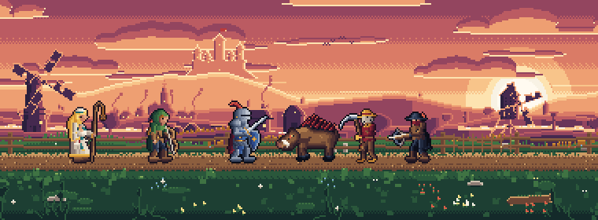

Lluvia de flechas · antes
Una sola andanada de flechas pequeñas.

Tres oleadas, cada una con un tercio del daño (el total es el mismo), cada 0,45 s. Ahora menos flechas (la mitad) y sueltas: caen en sitios al azar, con tres ángulos distintos, a algo distinta profundidad, y cada oleada se reparte en un cuarto de segundo, así que ninguna sale igual. Se clavan y se van antes de la siguiente. (El destello blanco de los enemigos es solo de esta vista previa; en el juego es el destello normal de golpe.)

Una sola andanada de flechas pequeñas.
El Knight grita, el anillo recorre el suelo y cada héroe lleva un sigilo de latón a los pies que palpita, con chevrones dorados subiendo a los lados: fuerza que sube, sin fuego.

Llamas a los pies de cada héroe: parecía que se estaban quemando.